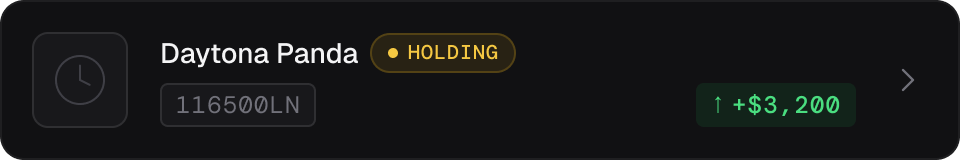
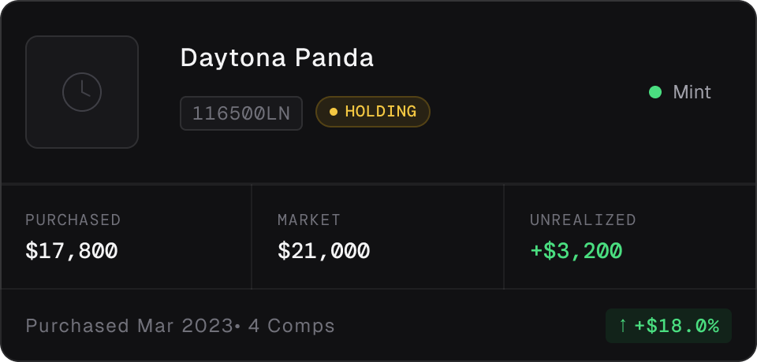
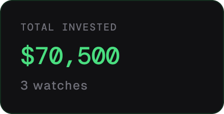
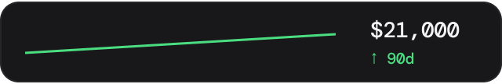
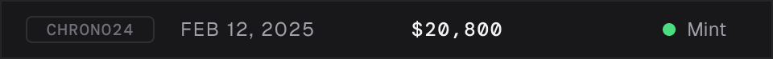
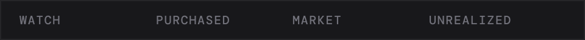

10 atoms · 6 molecules · every decision intentional
Every component in the system exported directly from Figma - the same token values, the same constraints, the real thing.
Slash-named standalone components (Badge/Holding etc.) rather than variant sets.
Three variants covering the full action hierarchy. Primary uses Brand/Primary token - swap one value to rebrand.
Default · Focus · Error states. Focus ring uses Brand/Primary at 12% opacity.
Inventory filter pills. Active state uses Brand/Primary border + tinted fill. Separate from Badge atom - different job, different component.
Three variants: subtle, labeled, and gold-accent for section breaks in the Detail Panel.
Loading state placeholder. Corner radius matches the element it replaces - applied to inner rectangle, not the outer component frame.
Three sizes: sm/32px for compact cards, md/48px for expanded cards, lg/72px for the detail panel hero.
Lucide icons at 16px. Colored via semantic tokens - Text/Secondary for neutral, Brand/Primary for positive delta, Status/Error for negative. Dropped directly at organism level rather than wrapped as instances.
Shows absolute and percentage change. "Delta" - the mathematical term for difference - is used throughout Dial's naming for this component.
Active state: gold tint + Brand/Primary icon color. Default state: tertiary text, no background.

The primary list item. Thumbnail atom + ref/name/price text + Badge atom + Delta Indicator atom, composed in Auto Layout. Compact keeps the list scannable - expanded shows more detail on hover or selection.

Same atoms as Compact, restructured for a wider layout. Used in the detail panel context where more horizontal space is available.

Used in the Portfolio Summary Bar. Label in Label/sm, value in Mono/data at 20px.

Market value trend over time. labels in DM Mono at 6px - small enough to annotate without competing with the line.


Source chip uses a fixed-width wrapper to maintain column alignment regardless of chip label length - a non-obvious Figma constraint solved with a wrapper frame.


Three-column layout using DM Mono throughout. Delta cell pulls color from the Delta Indicator atom - green for gain, red for loss, tertiary for flat.